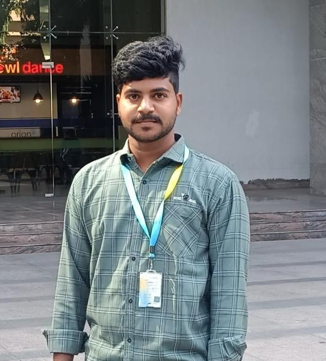
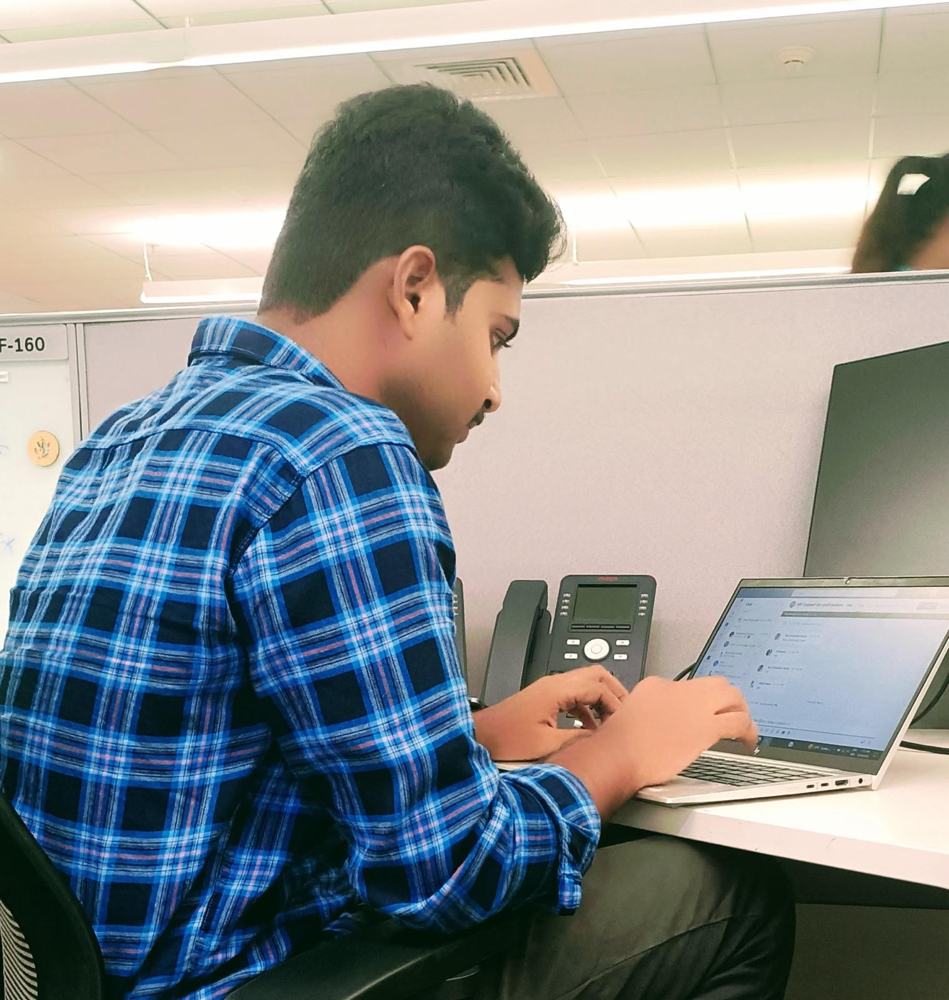
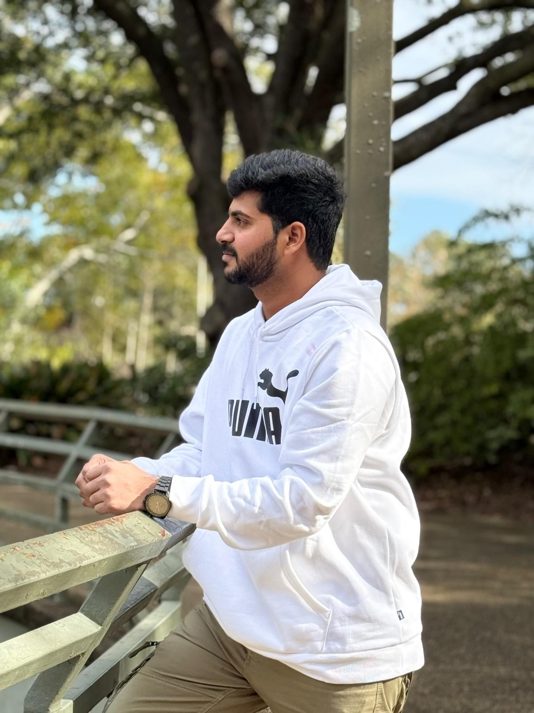
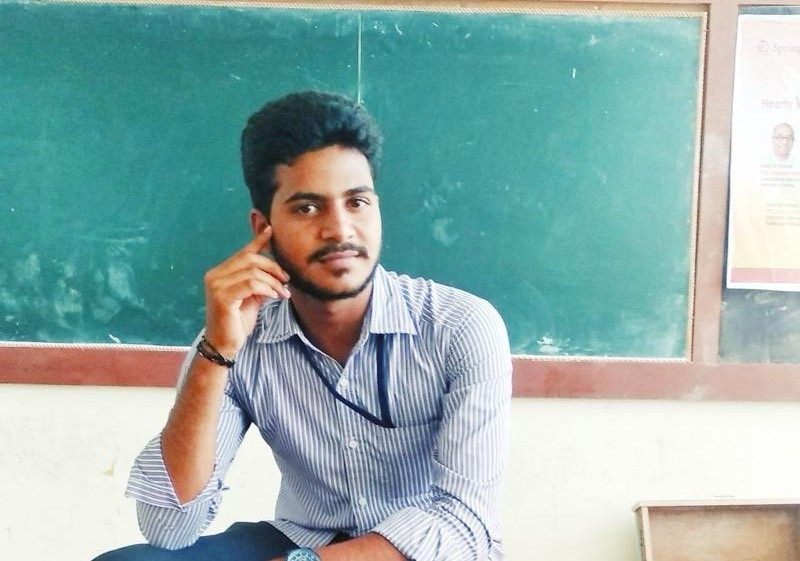

I completed my Master’s in Management Information Systems at Auburn University at Montgomery. During this time, I deepened my understanding of data-driven decision making, systems analysis, and enterprise IT solutions.

I worked as an Associate Software Engineer at LTI Mindtree, where I was involved in backend development using Java and Spring Boot, building scalable APIs and collaborating in Agile teams.

I completed my BCA from Vignan University, where I built a strong foundation in programming, databases, and problem-solving techniques that sparked my interest in software development.

I did my Intermediate with BI.P.C stream at Sri Chaitanya Junior College in Vijayawada. This stage helped build my interest in logic, biology, and analytical thinking.

I completed my 10th class at Sri Rama Krishna Hindu High School in Amaravathi. It was a key milestone that developed my foundation and discipline in academics.